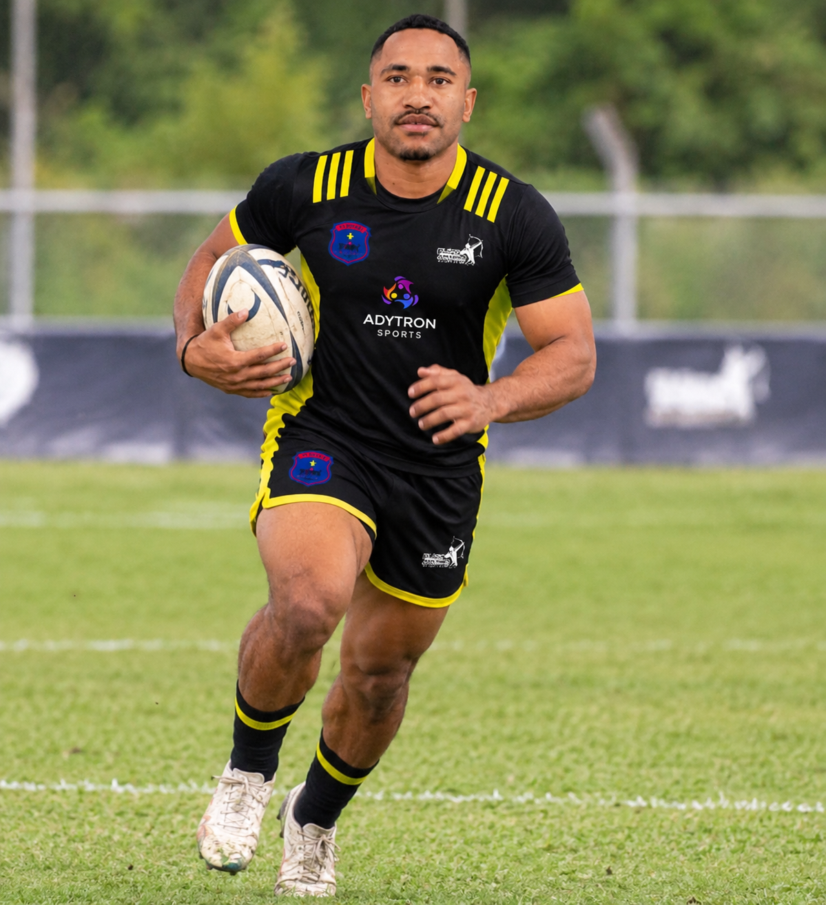

Papua New Guinea · Based in India
JOSEPH
CHRIS
RUGBY UNION PLAYER
Built on the fields of Port Moresby. Playing professional rugby in India.
🇵🇬
Representing Papua New Guinea
Playing professionally in India
Playing professionally in India

THE CENTREPORT MORESBY · INDIA
PLAYER PROFILE
Papua New Guinea · Based in India
RUGBY BUILT ON
GRIT AND HEART.
Rugby has been part of my life since childhood in Papua New Guinea. I played Rugby League until 2024. I moved to India to study and play professional Rugby Union in both 7s and 15s.

PERSONAL DETAILS
- FULL NAME
- Joseph Chris
- NATIONALITY
- Papua New Guinea
- POSITION
- Center
- JERSEY
- No. 13
- FORMATS
- Rugby League · Rugby 7s · Rugby 15s
- HEIGHT
- 5'8" (173 cm)
- WEIGHT
- 89 Kg
- BASED IN
- India
PLAYING EXPERIENCE
- Rugby League · Papua New Guinea Started playing as a child and played through 2024.
- Professional Rugby Union · India Moved to India in 2024 to study and play professional Rugby Union in both 7s and 15s.
- Tournament circuit Competed in All India, Southeast Asian, and international tournaments.
KEY STRENGTHS
- Ball carryingPowerful carries to break through the line.
- DefenceDependable tackling on both sides of the ball.
- Speed & agilityQuick feet and acceleration in open space.
- Game awarenessRead play and make decisive choices under pressure.
- Work ratePhysical fitness paired with consistent effort.
- Team leadershipA positive attitude that lifts the people around me.
ACHIEVEMENTS & TOURNAMENTS
| YEAR | TOURNAMENT | RESULT |
|---|---|---|
| 2024 | All India University | Bronze medal |
| 2024 | Himachal International 7s Tournament | Silver medal |
| 2025 | Mumbai · 90th Edition — All India & Southeast Asia Rugby 15s | Bowl winner |
| 2026 | Kolkata · 91st Edition — All India & Southeast Asia Rugby 15s | Bronze medal |
| 2026 | Hyderabad · Deccan 7s | Gold medal · Player of the Match |
| 2026 | Goa International 7s | Plate winner |
CAREER GOAL
To represent at the highest level, grow as a professional rugby player, and inspire young players from Papua New Guinea to chase their dreams through discipline and hard work.
CONTACT & ADDRESS
Open to opportunities, conversations, and the next big challenge.
- PERMANENT
- Port Moresby, Taruma Barracks, Papua New Guinea
- TEMPORARY
- Lovely Professional University, Jalandhar, Punjab, India